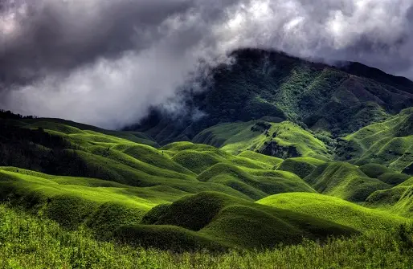
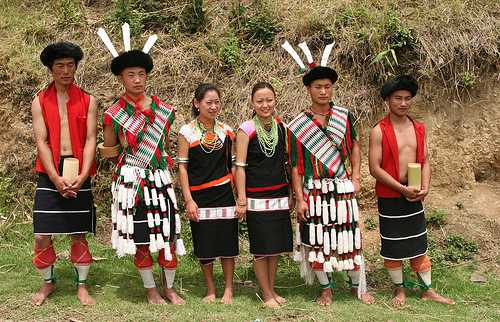
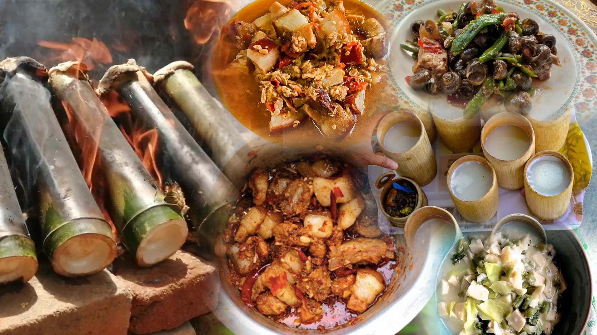

╰┈➤Nagaland Information
| ✧ Aspect | Information |
|---|---|
| ✧ Capital | Kohima |
| ✧ Chief minister | Neiphiu Rio |
| ✧ Largest City | Dimapur |
| ✧ Districts | 11 |
| ✧ Official Language | English |
| ✧ Other Language | Konyak, Ao, Lotha, Angami, Chakru, Sangtam, Bengali, Zeme, Yimchungre, Chang |
| ✧ Population | Approximately 2.2 million |
| ✧ Area | 16,579 square kilometers |
| ✧ Major Rivers | Dhansiri, Doyang, Dikhu |
| ✧ Major Industries | Agriculture, Handloom, Tourism |
| ✧ Popular Places | Dimapur, Kohima, Mokokchung, Dzukou Valley |
╰┈➤Traditional Dresses of Nagaland
Nagaland's traditional Dresses includes colorful woven shawls for both men and women. Men typically wear a loincloth and a sleeveless coat, while women wear a skirt with a sleeveless blouse and adorn themselves with jewelry.
╰┈➤History of Nagaland
Nagaland, situated in the northeastern part of India, is home to several indigenous tribes with rich cultural heritage. The history of Nagaland is deeply intertwined with the customs, traditions, and lifestyle of its tribal communities.
The earliest records of human habitation in Nagaland date back thousands of years, with evidence of ancient cave dwellings and megalithic structures found across the state. The Naga tribes, known for their distinct social structure and warrior culture, have inhabited the region for centuries.
Nagaland remained relatively isolated from external influences until the arrival of the British in the 19th century. The British colonial administration established control over the Naga territories, leading to resistance movements against foreign rule.
After India gained independence in 1947, Nagaland witnessed several decades of insurgency as various Naga nationalist groups fought for autonomy and self-determination. The prolonged conflict finally came to an end with the signing of the ceasefire agreement between the Indian government and Naga rebel groups in 1997.
Today, Nagaland is known for its vibrant tribal festivals, traditional craftsmanship, and scenic landscapes. Despite its tumultuous past, the state is striving towards peace, development, and preserving its unique cultural heritage.
Thank you
╰┈➤Nagaland Pictures



